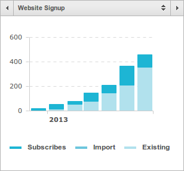

Micro-Projects for Fun and Profit
June 2013
Since reading Max Klein’s blog (before it was removed) and Gabriel’s post on micro-projects, I’ve become intrigued with micro-project validation. In other words… how do I quickly ship an idea and analyze if it’s a no-go? How can I experiment rapidly to drive growth? How can I leverage the open source community to build my product for me? How can others become evangelists for my product? How can I make my message clearer to increase conversion rates?
I shipped the following (2) micro-projects as weekend hacks…
Teelaunch
We print & ship your t-shirt crowdfunding rewards & more for Kickstarter, Indiegogo, RocketHub and other platforms! Sign up for our t-shirt pricelist, t-shirt color chart, and t-shirt template!
- Name: Teelaunch
- Website: https://teelaunch.com
- Date Launched: January 2013
- Revenue: < $50K
- Unique Visitors: 13,793
- Active Users: 459
- Conversion Rate: ~3.32%
- Effort Level: Low (customers find us)
- Growth Drivers: Teelaunch Badge, Indiegogo’s blog (#1 and #2), CrowdfundingPack, WIRED
- Tech Stack: Node, Jade, LESS, AWS, MailChimp, Zapier, PayPal, Crazy Egg, and Google Analytics
- Pros: SEO is great, fulfillment/postage is completely automated, personal enjoyment from helping interesting crowdfunding projects (e.g. FAKE GRIMLOCK), Zapier sends welcome emails automatically
- Cons: Manual PSD/AI quality control, customers don’t always know what they want, artwork/revisions and sales funnel takes time
MailChimp Subscriptions

The subscription list nearly doubled in May, due to Indiegogo’s blog post #2.
Crazy Egg Heatmap and Report
Average user is from the United States, visits our site at midnight on Tuesday, and runs Chrome on Mac OS X — Download Report
Prove
Integrate phone verification in minutes. Easily add SMS or phone call pin verification to your app. Get 100 free credits just for signing up.
- Name: Prove
- Website: https://getprove.com
- Date Launched: April 2013
- Revenue: < $1K
- Unique Visitors: 4,869
- Active Users: 84
- Conversion Rate: ~1.72%
- Effort Level: High (customers hard to find)
- Growth Drivers: 60 Second User Retention, Prove Plugin and Twilio Partner Program
- Tech Stack: Node, Jade, LESS, AWS, Twilio, Stripe, and Google Analytics
- Pros: Open source community built the API wrappers, service runs itself; no manual order processing
- Cons: Pay-as-you-go ≠ predictable income, not all users integrated with API yet
Teelaunch comes out on top between these (2) based on revenue and growth. The guest blog posts really drove traffic and the Teelaunch Badge on projects’ pages connected us to customers that understood our business instantly. I’m surprised that Prove’s JavaScript plugin hasn’t attracted more developers (it even works great on mobile!).
If I was asked the question, “How can I validate a startup idea quickly?” ‐ I’d currently respond with these (3) steps (which is basically the same as Ryan Hoover’s email-first startup post):
- Design a single-page website that’s very unique. Iterate on your verbiage carefully; simplify words and cut out as many as possible. Don’t use LaunchRock, write some clean HTML/CSS (it doesn’t need to be responsive either; don’t waste your time with that).
- Add Google Analytics, MailChimp, and Zapier to automate analytics and connect with users. Your call-to-action (email signup) should trigger a “zap” with Zapier to do something (e.g. send a welcome email or ask them a question). You could just do this manually for now.
- Ship within 48 hours. Repeat steps 1-2 with a brand new idea. Try experimenting with completely different domains.
Questions I’d like to ask…
- What would be a clever way to drive growth for Prove? — it’s hard to get users integrating… should I suggest $X credit deposit for us to integrate for them? Should I stop targeting developers, charge subscription rates, and focus on non-tech savvy folks?
- What are other domains with a similar model to Teelaunch? — if you can automate/build 10x of these, then you could make money
- What are other ideas that simply monetize an existing API/service? — similar to monetization of Twilio’s API for Prove
niftylettuce@gmail.com | Github | Twitter | Updates | RSS/XML Feed